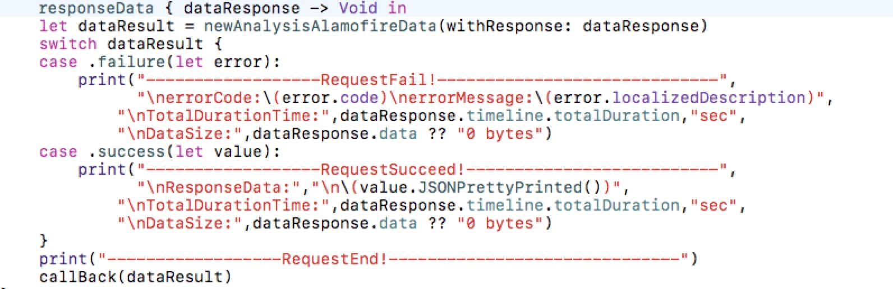
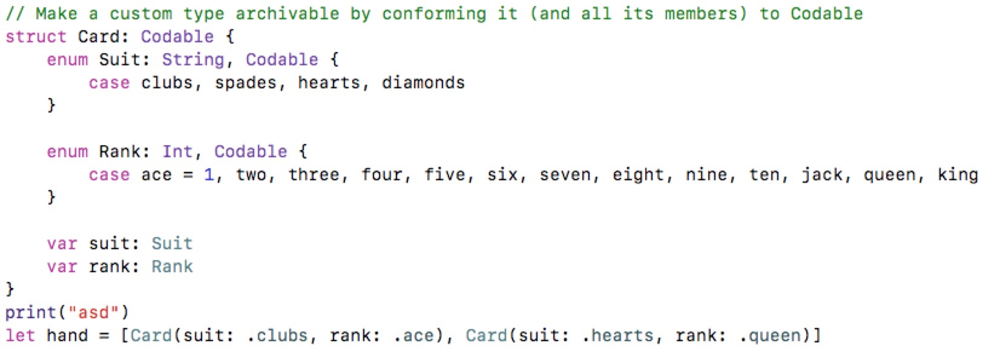

Whats-new-in-swift-4 (上)
Swift4终于到4了,这次升级对之前的版本有很好的兼容,而且也有一些很不错的API
于是我是看了 Ole Begemann这位外国友人的github的Swift4的playground传送门总结了一下,这种东西,还是老外搞得好,国内真的不行...
Strings
- 第一个就是String,增加了
"""这个功能 栗子:
let multilineString = """
This is a multi-line string.
You don't have to escape "quotes" in here.
The position of the closing delimiter
controls whitespace stripping
"""
print(multilineString)
打印出来的效果是这个样子的

没错,就是和你在代码里写的空行一模一样,不需要打换行符和空格了,不知道大家觉得如何,我是觉得非常好,因为...

我只是为了让网络请求的打印的日志好看一点,把代码写成这样也是很蓝瘦的,不过现在有"""就好了
2. String终于有.count了 不容易,而且取subString什么的更容易了,我自己项目里的String的extension终于可以去掉了,人家写的确实比我好,嘿嘿
let greeting = "Hello, 😜!"
let comma = greeting.index(of: ",")!
let substring = greeting[..<comma]
//print Hello
SubScripts
1.
这个不用说,秒懂,感觉还好,以前用着也不费劲
let numbers = [1,2,3,4,5,6,7,8,9,10]
numbers[5...] // instead of numbers[5..<numbers.endIndex]
//print Hello
Private declarations visible in same-file extensions
同一个文件下的Extensions中用到的Private属性可以不用改为filePrivate了,这个改动很好,因为同一个文件下的类的扩展,本身就同一个类,为什么我在类的方法中调用自己的属性,还需要用fileprivate,就很奇怪,当初我用的时候就感觉很难受,一使用extension就需要改权限...

如果在swift3中,stroage这个属性是要改成fileprivate的.
Key Paths

sicp[keyPath: \Book.title]
sicp.title
//print same Structure and Interpretation of Computer Programs
sicp[keyPath: \Book.title]
sicp[keyPath: \Book.primaryAuthor.name]
//print Harold Abelson
结构体中的属性可以像路径一样被取出
当然也可以拼接路径 就像这样
let authorKeyPath = \Book.primaryAuthor
type(of: authorKeyPath)
let nameKeyPath = authorKeyPath.appending(path: \.name) // you can omit the type name if the compiler can infer it
sicp[keyPath: nameKeyPath]
//print Harold Abelson
虽然我现在也不是太理解这样好处,但是能感觉出来这个一个很重大的改进,很多大神都可能会在这做文章,期待.
Encoding and decoding 重头戏
这个是已经被公认的一个重大的提升,先举栗子

这是一个结构体,有一点特殊,它遵循了Codable协议,hand数组中初始化了两个Card.
然后~
Encoding
var encoder = JSONEncoder()
// Properties offered by JSONEncoder to customize output
encoder.dataEncodingStrategy
encoder.dateEncodingStrategy
encoder.nonConformingFloatEncodingStrategy
encoder.outputFormatting
encoder.userInfo
let jsonData = try encoder.encode(hand)
String(data: jsonData, encoding: .utf8)
//print "[{\"rank\":1,\"suit\":\"clubs\"},{\"rank\":12,\"suit\":\"hearts\"}]"
//你没有看错 它是JSON了
Decoding
let decoder = JSONDecoder()
let decoded = try decoder.decode([Card].self, from: jsonData)
// decoder 现在和截图中hand是一模一样的了666
系统的API帮我们做了json解析,这是非常好的.
结构体是值类型,适用于单向数据流的数据传输方式,不过移动端的数据流一般都是双向的,意思就是你引用了别人的model,你把model中的数据给改了,那别人的model对应的数据也改了,因为大家的model用的都是类,而不是结构体,是引用类型,这样做在移动端是很方便的,但是也有很多弊端,比如你改了别人的数据,但是那哥们却不知道,这是很危险的,如果项目比较大,这老哥就为了知道是谁改了他数据就能找半天,但是结构体是值类型,就不会有这个问题,因为每次赋值,都是一个新的,这样就很安全,但是你每次改数据都需要调用别人的接口,这样就会很繁琐,而且数据的一致性和保持不了,在web前端有流行的框架中,react,vue(排名不分先后)都是单向数据,但是他们也有双向绑定的机制,也有很好的框架保证数据的准确.移动端这样的框架也有,只不过没有流行起来
所以我就测试了一下类是不是也可以这样搞,结果是可以,皆大欢喜,引用类型也可以遵循Codable协议,来实现和JSON数据的互转.
Generic subscripts 角标方法中可以使用泛型了
这是一个很好的消息,这会使得subscripts的使用变得更广泛,更已用,我在之前封装的UserDefaults方法中就因为角标方法中不能使用泛型限制了我的思路,现在终于可以实现了.
subscript<T>(key: String) -> T? {
return storage[key] as? T
}
相信用过subscipt方法的看到这个栗子会很激动,没用过的,也感受不到Swift3中不能使用泛型的困扰了